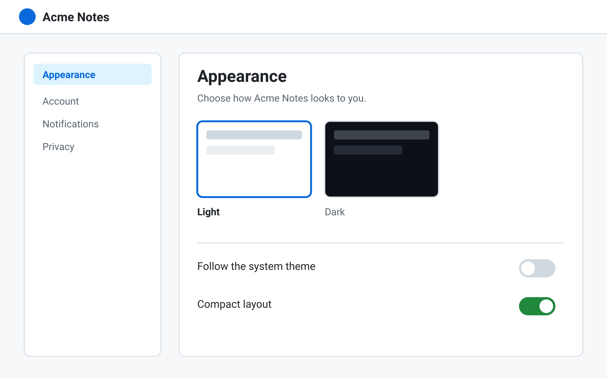
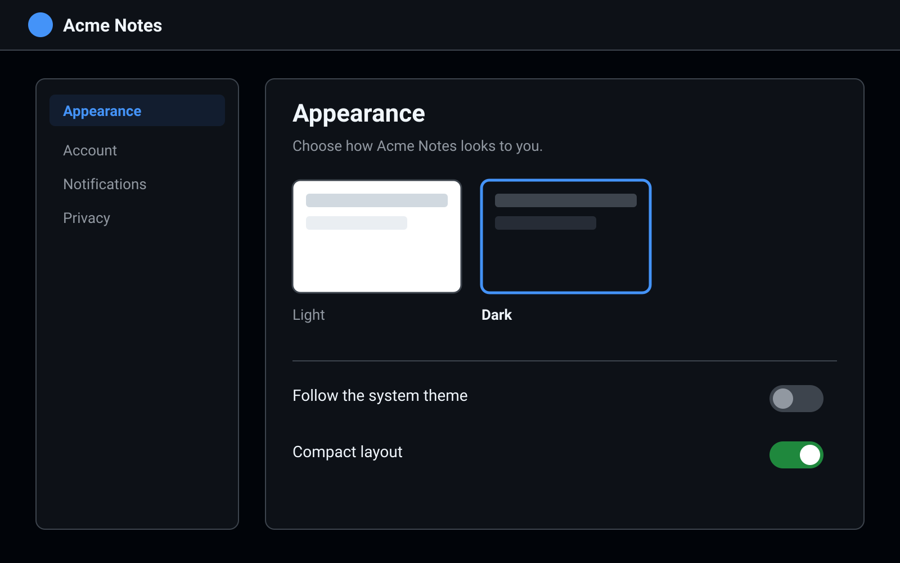
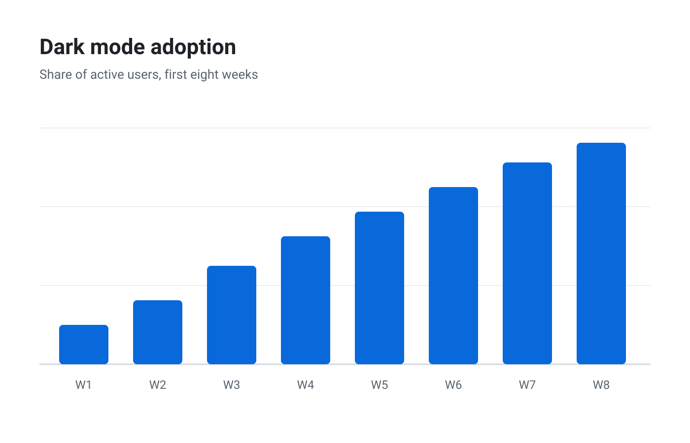

The settings page now follows the system theme. Before, after, and the first numbers:
  



Looks good to me. The toggle could use more contrast in the dark theme.
The settings page now follows the system theme. Before, after, and the first numbers:


